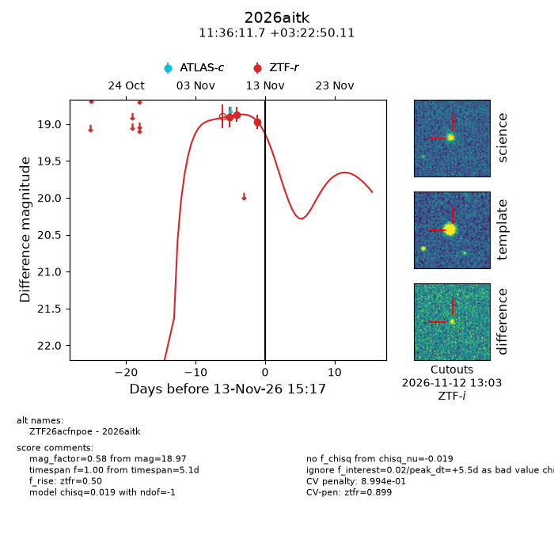
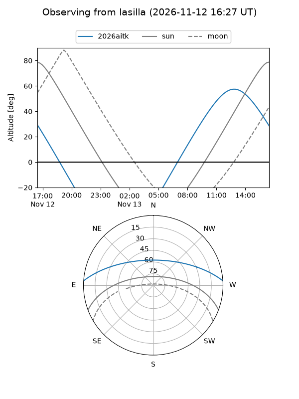
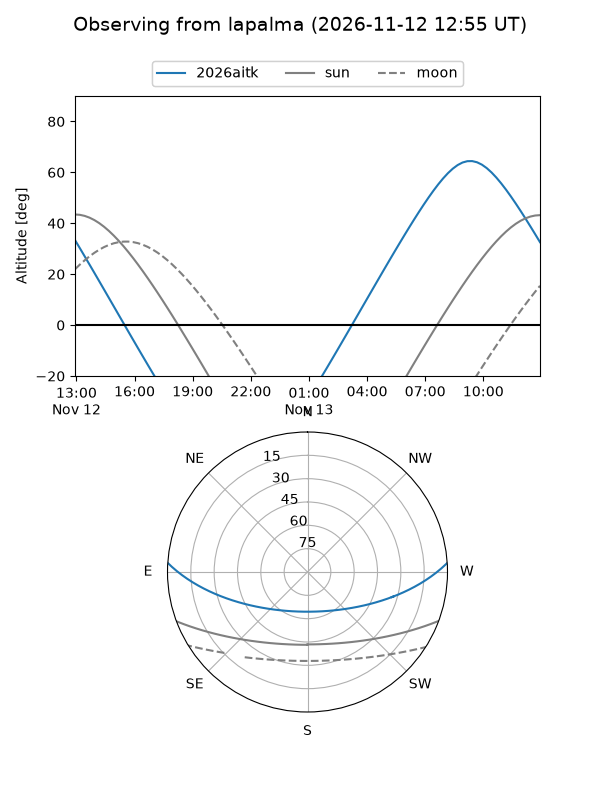
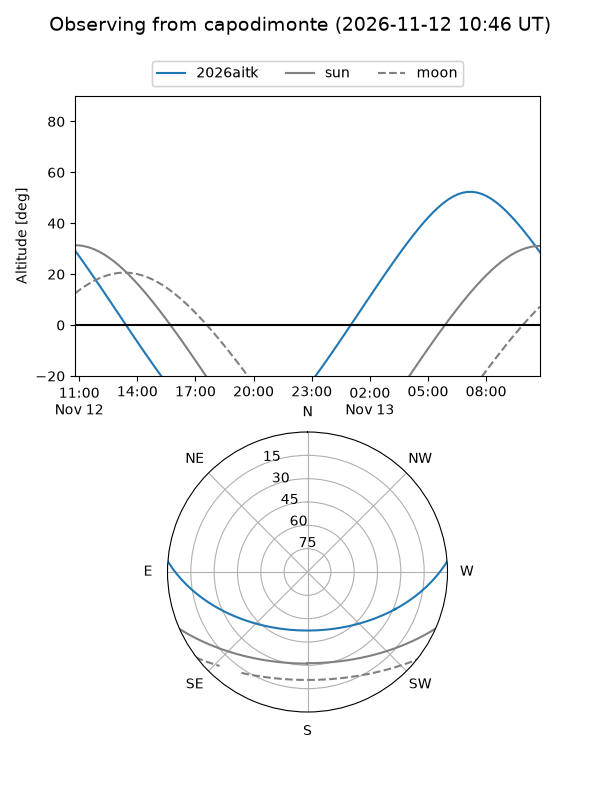
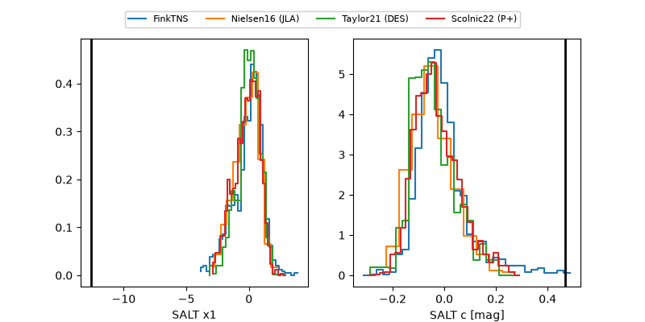

2026aitk
Target 2026aitk at 2026-11-13 15:18
Aliases and brokers:
FINK-ZTF: ztf.fink-portal.org/ZTF26acfnpoe
Lasair-ZTF: lasair-ztf.lsst.ac.uk/objects/ZTF26acfnpoe
ALeRCE-ZTF: alerce.online/object/ZTF26acfnpoe
YSE-PZ: ziggy.ucolick.org/yse/transient_detail/2026aitk
TNS name: wis-tns.org/object/2026aitk
Direct TNS query: direct search
alt names
ZTF26acfnpoe (ztf,fink_ztf)
2026aitk (tns,yse)
Coordinates:
equatorial (ra, dec) = 174.0488,+3.38058
equatorial (HMS+DMS) = 11:36:11.72,+03:22:50.11
galactic (l, b) = (262.5461,+60.21272)
Flags:
likely cv: !!
CV pen: 0.8993618443856801
peak dt: +5.5
Photometry:
last ztfr=18.97
3 ztfr detections
Lightcurve

Visibility



Additional plots
